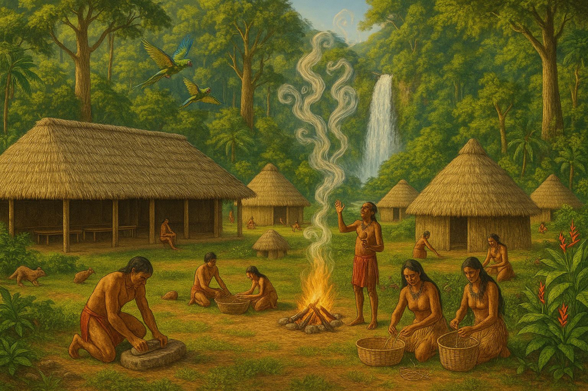
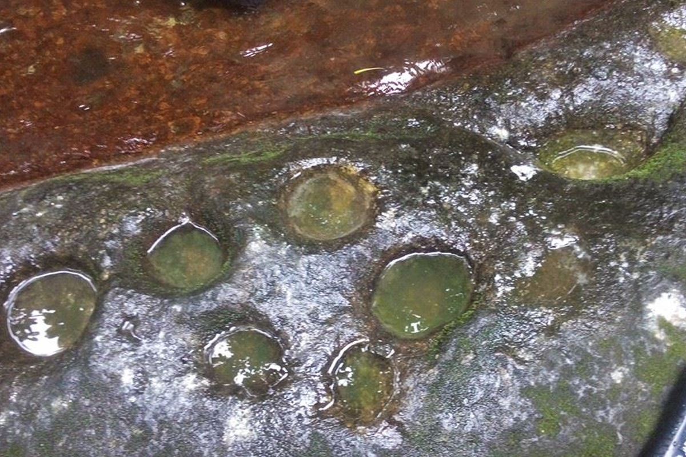
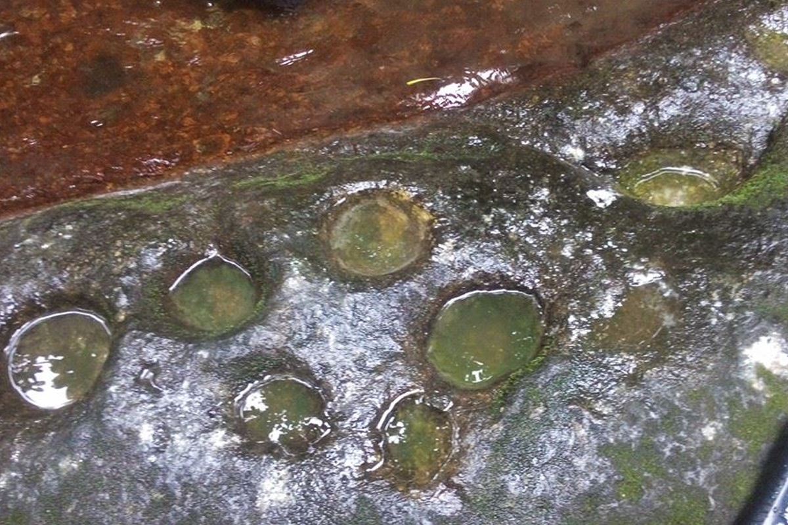

Who Are the Kalinago?
The Kalinago, once known as Caribs, are the Indigenous people of the Lesser Antilles. The Kalinago Territory in Dominica remains one of the few legally recognized Indigenous communities in the Caribbean. We maintain language, craft, and connection to land despite colonization and modern pressures.



 
